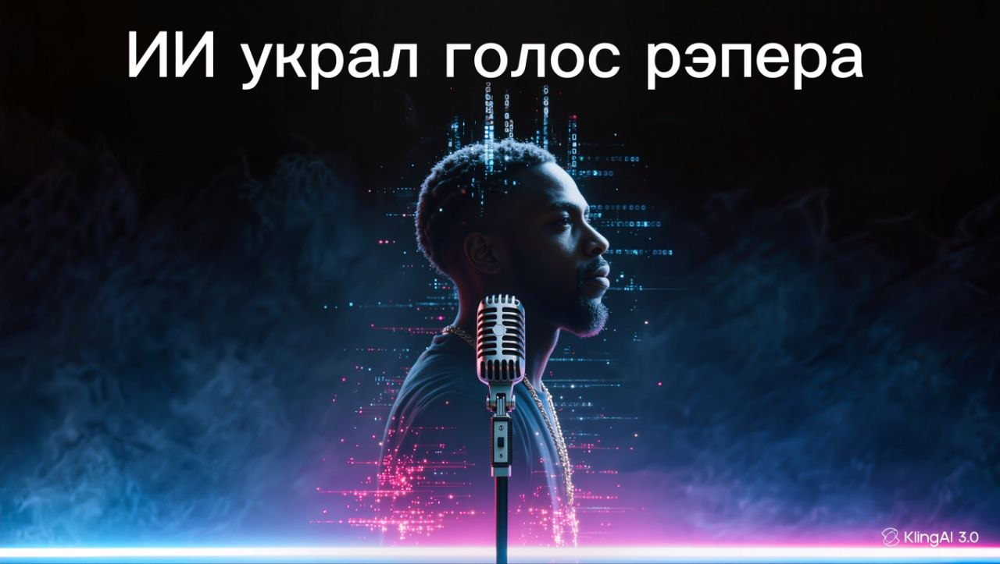

ИИ украл голос рэпера: хит от Дрейка, который он не записывал

Апрель 2023 года. Анонимный пользователь под ником Ghostwriter977 решил проверить, сможет ли нейросеть подвинуть мировых звёзд. Он с помощью искусственного интеллекта сгенерировал трек «Heart on My Sleeve», полностью сымитировав голоса и манеру исполнения Drake и The Weeknd.
Больше полезного про нейросети — простым языком, каждый день в нашей группе ВКонтакте
Перейти во ВКонтакте →Провал: песня мгновенно стала вирусной, собрав миллионы прослушиваний в TikTok и около 600 тысяч стримов на Spotify. Слушатели были в восторге и думали, что это официальный совместный релиз звёзд.
Музыкальные лейблы запаниковали: ИИ научился идеально копировать чужие голоса без разрешения артистов. Сам Дрейк отреагировал жёстко, заявив: «Это была последняя капля, ИИ».
Итог: музыкальный гигант Universal Music Group заявил о нарушении прав и через жалобы добился удаления трека со всех стриминговых платформ. Этот случай официально открыл войну правообладателей против ИИ-каверов, а правила защиты авторских прав в музыке пришлось срочно переписывать.
Источники: Universal Music Group Statement, Spotify News, Billboard.
Где почитать подробнее: Consequence (англ.).
Ещё по теме
ИИ против человечества: проект ChaosGPT
Как ИИ-агенты сами взломали чужую компанию
Chevrolet Tahoe за один доллар: как хитрый промт довёл до сделки